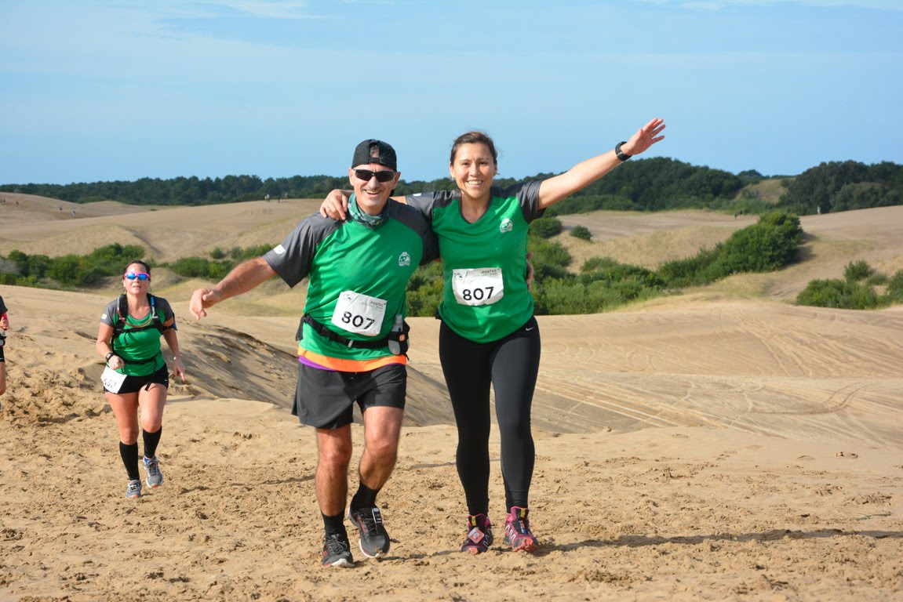
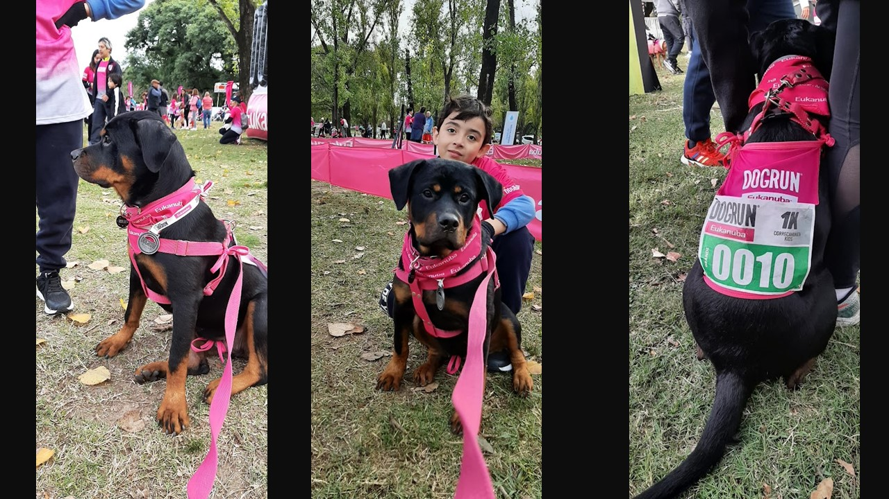
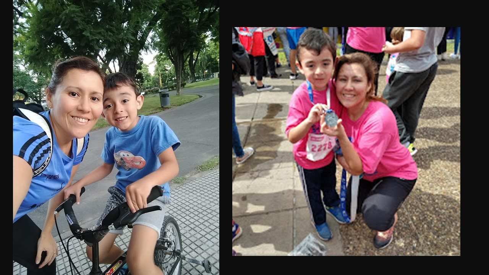

Mis hobbies...
Uno de mis hobbies es trabajar con resina epoxi, hago piezas decorativas, llaveros, señaladores pero lo que más hago son placas identificatorias para mascotas.
Otro de mis hobbies...
Es practicar running, me encantan las carreras de avetura donde podemos ir en familia y compartir todas la experiencias al aire libre.
Comencé en el running a los 37 años, un día vi un grupo en un parque y me anoté. Lo que disfruté mis primeros 21km,
no tiene descripción!
Lo que mas me gusta de esta actividad es que puedo hacerla en familia, con Nico y ahora también con Nova, juntos hacemos carreritas y la pasamos genial!

Terma Adventure Pinamar
Felicidad plena en esa foto, junto a mi compañero Juan que siempre sigue para adelante. ¡es un ejemplo!

Primer DogRun para los mas chicos
Nova con 3 meses y Nico corrieron su primer carrera de 1km. ¡Una experiencia única!

Madre & Hijo
Nico de más chico en estas fotos, empezando a transitar el running junto a mí.

Viva la Patria!
9 de Julio, una de las primeras que corrimos juntos!